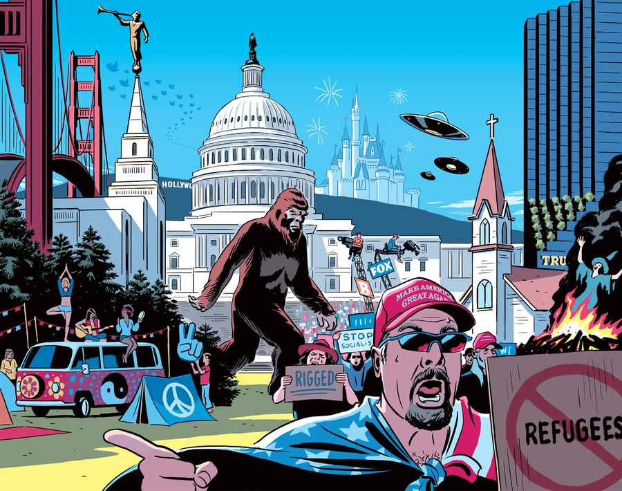

In the 2020 United States presidential election, many Republican voters falsely believed that Donald Trump had won the election. Despite a lack of any meaningful evidence of selection fraud, most Trump voters thought that voting in the United States, and mail-in voting, in particular, was unreliable. Republican voters who were more politically informed were more likely to hold beliefs that contradicted the best available evidence. As this state of affairs dampens the prospects of a functioning deliberative democracy, researchers have tried to understand the nature and origins of false beliefs and how to reduce their prevalence.
Social media may have played a central role in offering a platform where false news seems to spread further and faster than the truth. Social media has created not only decentralized modes of agency and expression but also new vectors for mis- and disinformation through its unfiltered publication process. Social media’s novel affordances suggest that new tools, concepts and technologies may be necessary to ensure the integrity of information ecosystems. This workshop aims to bring together leaders across industry and academia to discuss pathways for diagnosis.
We’re interested in a wide variety of topics related to information credibility online. Here’s some things we’d love to see represented within the workshop:
Submissions are 2-4 page PDF's submitted via PCS and should follow the AAAI format. Accepted submissions will have the option of publishing their work in the proceedings of ICWSM 2021.
Workshop papers submission: March 27, 2021
Workshop paper acceptance notification: April 10, 2021
Workshop final camera-ready paper due: April 17, 2021
| Time | Event | Info |
|---|---|---|
| 09:00 | Welcome and Introductions | TBA |
| 09.30 | Context: The Media Credibility Crisis | TBA |
| 10.20 | Break | TBA |
| 10.30 | Measure: Studying Trust and Beliefs | TBA |
| 11.30 | Mitigate: Some Real-World Solutions | TBA |
| 12.30 | Lunch break | TBA |
| 13.30 | Organize: Advancing the Conversation | TBA |
Maurice Jakesch is an Information Science Ph.D. candidate at Cornell University and a fellow at the Cornell Tech Digital Life Initiative and the German National Academic Foundation. He studies how people reason about credibility and authenticity in a networked society. He explores how and why judgments of AI-generated content and political news are often misguided.
Manon Revel is an Social and Engineering System PhD candidate at MIT and a Hammer Fellow. Manon studies news credibility and the trust crisis of journalism. She also works on political behaviors and electoral systems. She created and led webradios programs and is passionate about supporting and enhancing journalism’s quality.
Ziv Epstein is a PhD student in the MIT Media Lab. His work integrates aspects of design and computational social science to understand and build cooperative systems. He focuses on new challenges and oppurtunities that emerge from a digital society, particularly in the domains of social media and artificial intelligence.